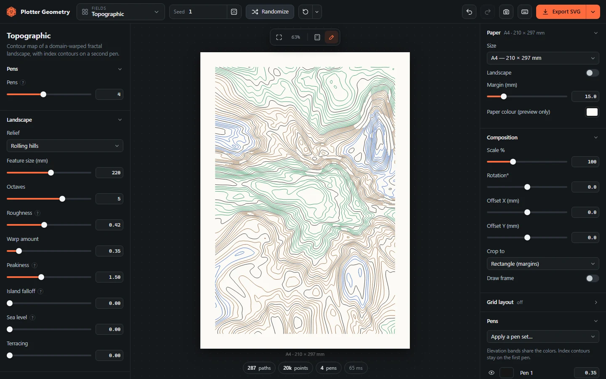
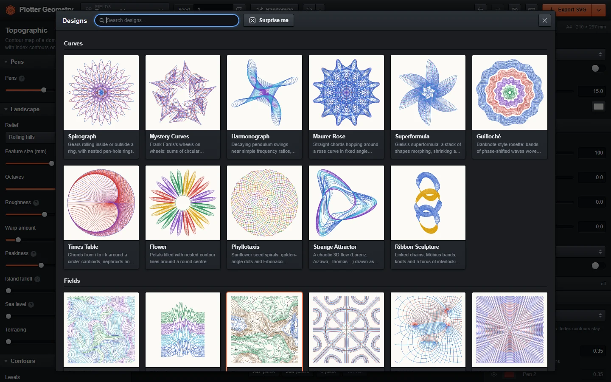

Plotter Geometry
A free web app for making generative line art for pen plotters like the AxiDraw. Pick a design, adjust it in the browser and export a plot-ready SVG.
Everything runs in your browser, so there's nothing to install or sign up for. It also works offline after the first visit.

Features
- Spirographs, harmonographs, strange attractors, flow fields, contour maps, Truchet and Penrose tilings, Celtic knots, circle packing, mazes, L-systems and more. See all designs.
- Turn a photo into a spiral, waves, engraving lines, halftone dots, stipples, a single-line TSP drawing or string art.
- Paper sizes from A6 to A2, Letter, Legal, Tabloid or custom, with adjustable margins.
- One to eight pens per design. Each design has its own default colors and the pen list shows what each pen draws.
- The same seed and settings always give the same drawing.
- Scale, rotate or crop the drawing to a circle, hexagon or diamond, or lay out a grid of variations on one sheet.
- SVG export in millimeters with one Inkscape layer per pen. You can also export one SVG per pen, a PNG or a share link.
- Drop an exported SVG back onto the preview to restore its settings.
Controls
Click the design name in the top bar or press G to browse designs. Use the sliders on the left to change the drawing, and the Paper & Output panel on the right for paper, layout and pens.
- R randomize parameters and seed
- Shift+R random design with random parameters
- Space new seed only
- E export SVG
- S save a snapshot
- F fit the preview to the screen
- Ctrl+Z and Ctrl+Shift+Z undo and redo
- ? show all shortcuts
Scroll to zoom the preview and drag to pan. Click the lock icon next to a parameter to keep it when randomizing, or double-click its label to reset it.

How It Works
Each design is a JavaScript function that takes the parameters and a seed and returns lines in millimeters, grouped by pen. Generation runs in a web worker so the page doesn't freeze on heavier designs. There are no frameworks or dependencies.
Before export the lines are cleaned up for the plotter. Close points are simplified, lines that meet end to end are joined and the order is sorted to cut down pen-up travel. The settings are also saved inside the SVG, which is why dropping one back in restores the drawing.
Plotting
Set the paper size, margin and pen widths to match your setup before exporting. Layer names start with the pen number (1 Pen 1, 2 Pen 2 and so on), so with the AxiDraw Inkscape extension you can plot one pen at a time from the Layers tab and swap pens in between. vpype and saxi read the same file.
For street maps of real cities, try SVGmap. It builds an SVG from OpenStreetMap data for pen plotters or laser engraving.
Created by jarvisar